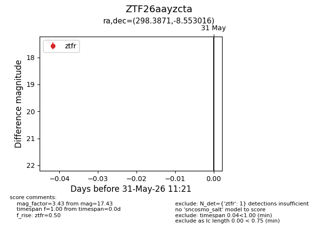
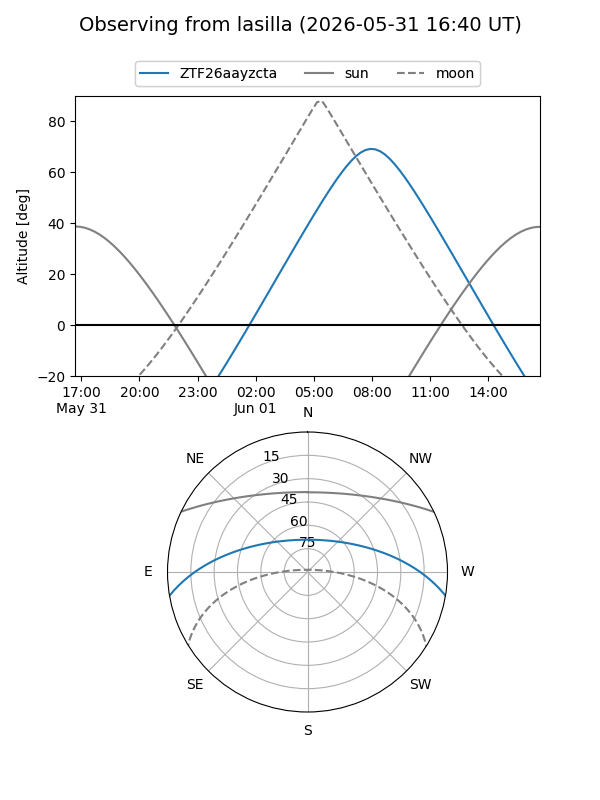
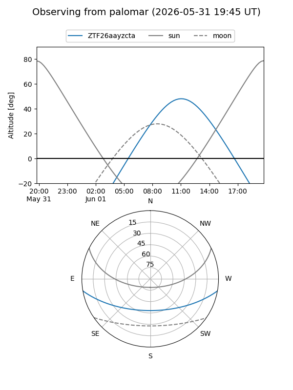

ZTF26aayzcta
Target ZTF26aayzcta at 2026-05-31 11:23
Aliases and brokers:
lsst-FINK: link
lsst-Lasair: link
lsst-ALeRCE: link
ztf-FINK: link
ztf-Lasair: link
ztf-ALeRCE: link
alt names
ZTF26aayzcta (ztf,fink_ztf)
Coordinates:
equatorial (ra, dec) = 298.3871,-8.55302
equatorial (HMS+DMS) = 19:53:32.91,-08:33:10.86
galactic (l, b) = (32.2313,-17.66308)
Flags:
Photometry:
last ztfr=17.43
1 ztfr detections
Lightcurve

Visibility


Additional plots